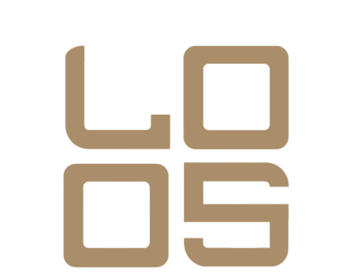

01
LawSmart Capital
Diagnóstico, diseño del vehículo, contratos, derechos económicos, garantías, documentación y coordinación integral.
ASESOR LEGAL Y COORDINADOR
LAWSMARTCAPITALLAWSMART CAPITAL
Asesoría legal · preparación del proyecto · coordinación regulatoria
Del activo o la empresa a una propuesta clara para potenciales inversionistas.
Ver nuestro alcance ↓ANTES DE BUSCAR INVERSIÓN, HAY QUE PREPARARSE
Es definir con claridad el activo, los derechos del inversionista, la forma de retorno, las garantías y la ruta regulatoria.
LawSmart Capital asesora al propietario o empresario. Organizamos la base legal, corporativa y documental para que el proyecto pueda ser evaluado por especialistas, proveedores autorizados y potenciales inversionistas.
Conocer nuestra ruta →UNA FUNCIÓN CLARA EN EL ECOSISTEMA
Coordinamos cada especialidad sin atribuirnos funciones reservadas a proveedores regulados.
01
Diagnóstico, diseño del vehículo, contratos, derechos económicos, garantías, documentación y coordinación integral.
ASESOR LEGAL Y COORDINADOR02
Certificación, tecnología, emisión, comercialización, custodia o negociación, según la naturaleza del proyecto.
ALIADOS REGULADOS03
Una propuesta clara y documentada para iniciar su evaluación regulatoria, técnica y comercial.
RESULTADO DE NUESTRO TRABAJOLEY DE EMISIÓN DE ACTIVOS DIGITALES · CNAD
Organizamos la información legal, corporativa y documental del proyecto tomando en cuenta la Ley de Emisión de Activos Digitales y la normativa aplicable de la Comisión Nacional de Activos Digitales. Los servicios regulados son realizados por los proveedores autorizados que correspondan.
DE LA VIABILIDAD A LA PRESENTACIÓN
Revisamos el activo o la empresa, el capital que se busca, sus ingresos, documentos y condiciones básicas.
Definimos el emisor o vehículo especial, contratos, gobierno, titularidad del activo y relaciones entre las partes.
Definimos derechos, plazo, pagos, uso de fondos, garantías y eventos de incumplimiento, con apoyo de los especialistas financieros requeridos.
Identificamos los requisitos aplicables y organizamos la documentación necesaria para trabajar con la CNAD y los proveedores autorizados.
Articulamos el trabajo con certificadores, proveedores tecnológicos, PSAD y comercializadores autorizados.
Ordenamos la información relevante, los riesgos y el uso de fondos para explicar la oportunidad con claridad.
PROYECTOS QUE PODEMOS EVALUAR
No ofrecemos tokenización automática. Cada proyecto debe demostrar titularidad, viabilidad económica y una ruta jurídica y regulatoria posible.
Locales, oficinas, bodegas o propiedades con titularidad clara, contratos e ingresos comprobables.
Proyectos con inmueble identificado, permisos, presupuesto, cronograma y estructura de garantías.
Empresas en marcha que buscan capital mediante deuda y pueden demostrar operaciones, ingresos y capacidad de pago.
Proyectos agrícolas, energéticos o industriales respaldados por activos, permisos, contratos y proyecciones verificables.
UNA RUTA ORDENADA
No todos los proyectos necesitan tokenizarse. La primera decisión es determinar si hacerlo aporta una ventaja real.
Revisión del activo, promotores, documentos, modelo financiero y objetivo de capital.
Definición jurídica, corporativa y económica de la propuesta.
Debida diligencia, contratos, información relevante y ruta regulatoria.
Selección e integración de los proveedores autorizados necesarios.
Proyecto preparado para ser evaluado por la autoridad, los proveedores autorizados y el mercado.
RESPALDO LAWSMART
LawSmart Capital es una línea especializada de LawSmart, S.A. de C.V., la primera legaltech salvadoreña. La práctica jurídica cuenta con el respaldo profesional de HCF&A Hernández Castillo Fortín & Asociados.
LO ESENCIAL ANTES DE COMENZAR
No. Evaluamos, asesoramos y preparamos el proyecto. La emisión, comercialización, custodia o negociación corresponde a los proveedores autorizados que resulten necesarios.
No necesariamente. Debe existir titularidad verificable, viabilidad económica, documentación suficiente y una estructura compatible con la regulación aplicable.
Una propuesta jurídica y económica definida, documentos organizados, riesgos identificados y una hoja de ruta para continuar con la autoridad y los proveedores autorizados.
No. La aprobación depende de la autoridad y de los proveedores involucrados; la captación de capital depende del proyecto, sus condiciones y la demanda del mercado.
Después de la evaluación inicial. El alcance cambia según el activo, la complejidad corporativa, el monto y los proveedores que deba integrar la operación.
EVALUACIÓN INICIAL
Revisaremos la información inicial para determinar si tu proyecto tiene condiciones para continuar hacia una preparación legal y regulatoria.